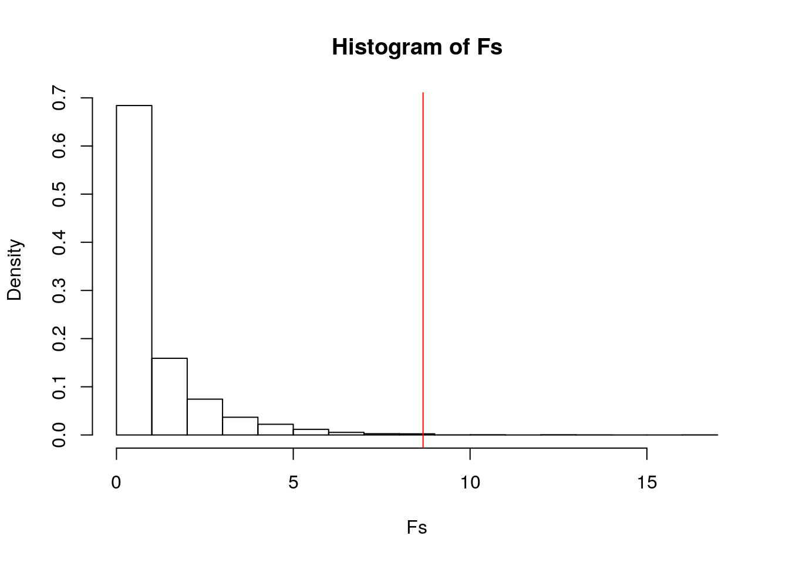
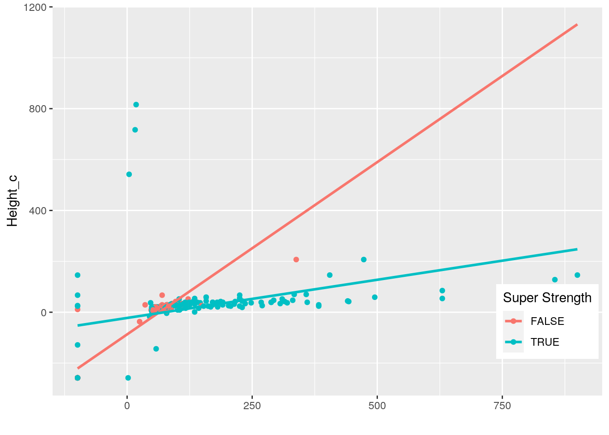
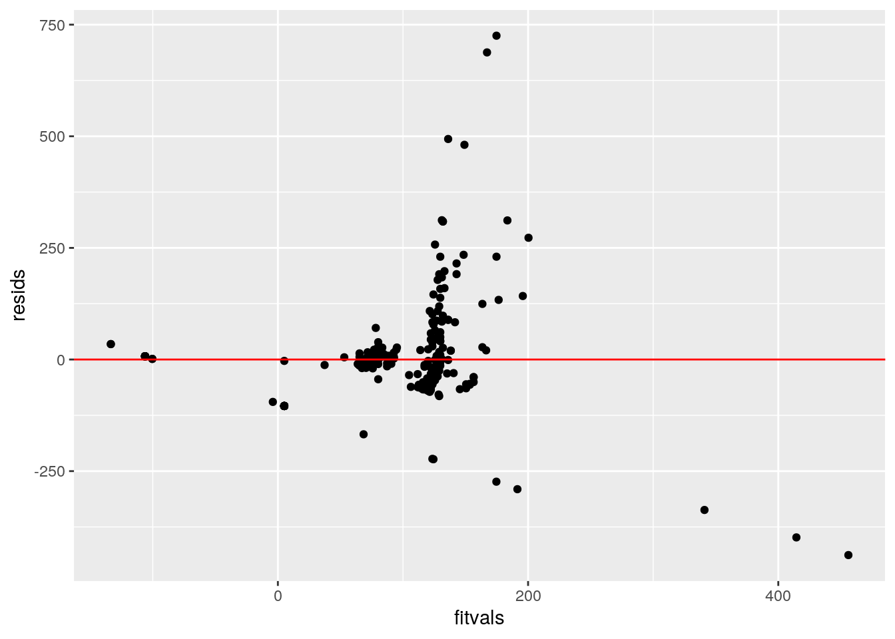
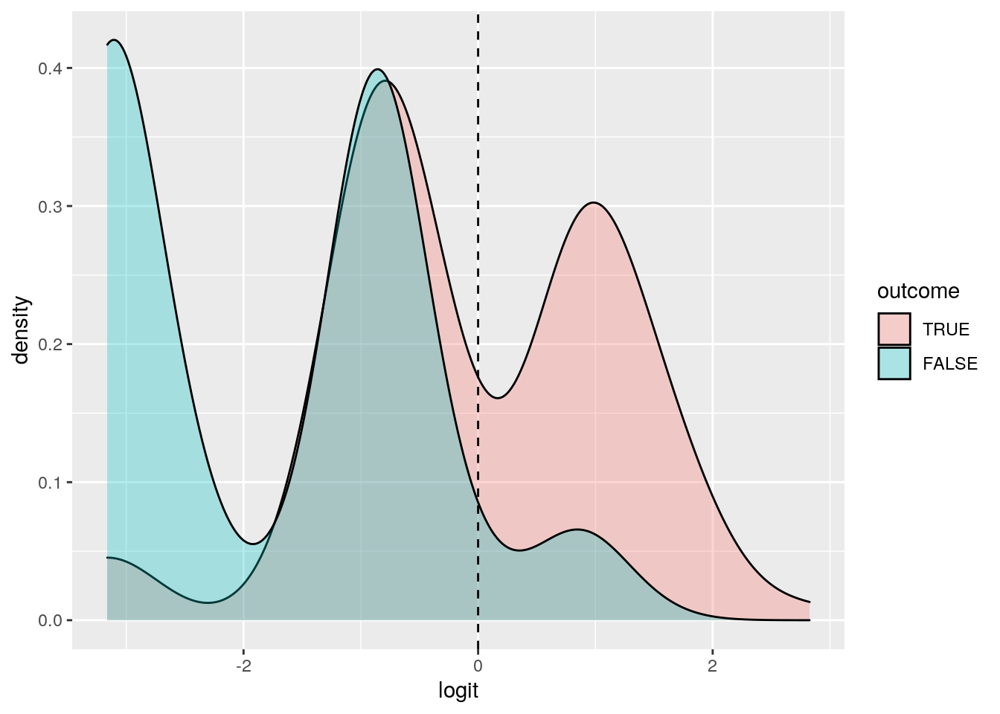
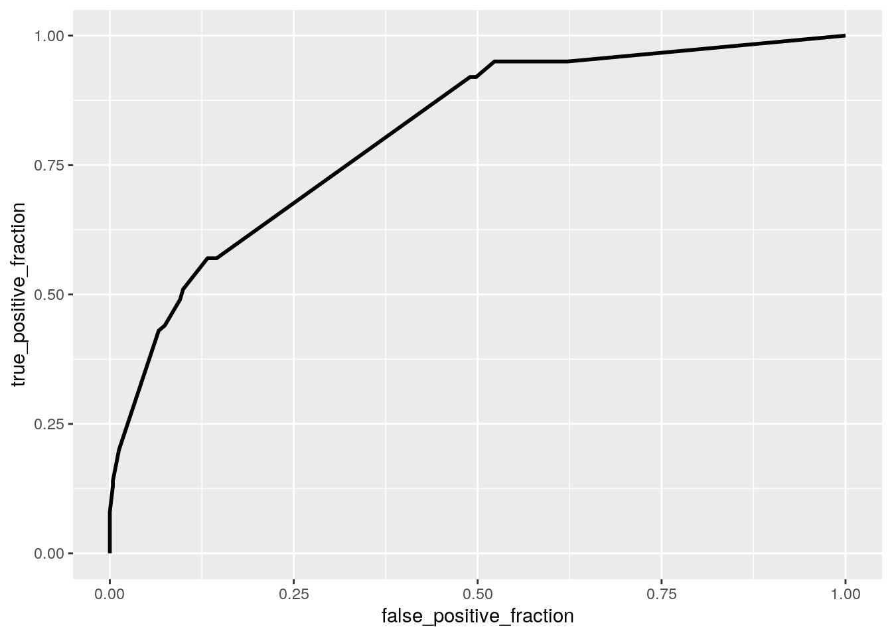

The data I utilized focused on Marvel superheroes and supervillains. The data initially featured characters from other publishers, but I chose only to analyze Marvel (largely because they are my favorite publisher). The data contained 341 observations and 177 total variables, 167 of which were various powers, abilities, and characteristics. These variables were the main focus of analyzation, and some specific variables which would be examined (though all were looked at in the end) included super speed and accelerated healing. Other variables included super strength, weapon based powers, flight, intelligence, and enhanced stamina. Of the non-power related variables, height and weight were utilized as well. Essentially, my goal was to determine if certain chosen power/abilities could be predicted by other powers/abilities.
First I read in my data, then joined the two datasets to form my super hero data for observation.
library(tidyverse)
hero1 <- read_csv("heroes_information.csv")
hero2 <- read_csv("super_hero_powers.csv")
hero2 <- hero2 %>% rename(name = "hero_names")
hero1 <- hero1 %>% select(-X1)Here I join the data using a full join to preserve all the characters and abilities and then filter for only Marvel characters.
herodata <- hero1 %>% full_join(hero2)
herodata <- herodata %>% na.omit()
herodata = filter(herodata, Publisher == "Marvel Comics")Here I run my manova to test whether height or weight (two dependent variables) differ by having or not having super speed.
man1 <- manova(cbind(Height, Weight) ~ `Super Speed`, data = herodata)
summary(man1)## Df Pillai approx F num Df den Df Pr(>F)
## `Super Speed` 1 0.024997 4.3329 2 338 0.01387 *
## Residuals 339
## ---
## Signif. codes: 0 '***' 0.001 '**' 0.01 '*' 0.05 '.' 0.1 ' ' 1A significant p value (0.014) was noted, indicating one of these two variables do differ by having or not having the super speed ability.
Univariate ANOVA’s were then performed to determine the responses that showed a mean difference across having or not having super speed.
summary.aov(man1)## Response Height :
## Df Sum Sq Mean Sq F value Pr(>F)
## `Super Speed` 1 22203 22203 1.7055 0.1925
## Residuals 339 4413443 13019
##
## Response Weight :
## Df Sum Sq Mean Sq F value Pr(>F)
## `Super Speed` 1 138239 138239 8.6699 0.003458 **
## Residuals 339 5405244 15945
## ---
## Signif. codes: 0 '***' 0.001 '**' 0.01 '*' 0.05 '.' 0.1 ' ' 1From the results, we see that there is no significant mean difference based on height (p value=.193). For weight, the mean difference does differ (p value=.003). In other words, weight does differ based on having or not having the super speed ability.
The mean differences below help reinforce this conclusion.
herodata %>% group_by(`Super Speed`) %>% summarize(mean(Height),
mean(Weight))## # A tibble: 2 x 3
## `Super Speed` `mean(Height)` `mean(Weight)`
## <lgl> <dbl> <dbl>
## 1 FALSE 152. 75.2
## 2 TRUE 169. 116.Here a post hoc t test is run, but since the super speed variable is only a yes or no value we already can conclude the significant variable and ignore this test when calculating Type 1 error.
pairwise.t.test(herodata$Weight, herodata$`Super Speed`, p.adj = "none")##
## Pairwise comparisons using t tests with pooled SD
##
## data: herodata$Weight and herodata$`Super Speed`
##
## FALSE
## TRUE 0.0035
##
## P value adjustment method: noneOverall, 3 total tests were run:1 manova and 2 anovas. The probability of making at least one Type 1 error was determined to be 0.143 (14.3%). The Bonferri Correction was calculated to be 0.017. After this correction, the significance between weight and super speed is still significant (p value=.003).
For our MANOVA assumptions, it would seem multivariate normality and linear relationships among the DV’s were met. For the independent observation assumption it’s possible that other power variables could have had an interaction resulting in the mean differences.
Now I run a randomization test on (F stat) weight and super speed. The null hypothesis essentially states that all the group means are equal, while the alternative hypothesis states that not all of the group means are equal.
obs_F <- 8.6699
Fs <- replicate(5000, {
new <- herodata %>% mutate(Weight = sample(Weight))
SSW <- new %>% group_by(`Super Speed`) %>% summarize(SSW = sum((Weight -
mean(Weight))^2)) %>% summarize(sum(SSW)) %>% pull
SSB <- new %>% mutate(mean = mean(Weight)) %>% group_by(`Super Speed`) %>%
mutate(groupmean = mean(Weight)) %>% summarize(SSB = sum((mean -
groupmean)^2)) %>% summarize(sum(SSB)) %>% pull
(SSB/1)/(SSW/339)
})
hist(Fs, prob = T)
abline(v = obs_F, col = "red", add = T)
mean(Fs > obs_F)## [1] 0.0026When interpreting the F stat histogram, we examine our actual F statistic (red line) relative to the generated F statistics. While the F statistic is not incredibly large (say off the page), when under the null hypothesis none of the generated F stats were greater than our actual F statisitc (8.670). Our P value was calculated at 0.003. As a result, we reject the null hypothesis.
Now I perform a linear regression to predict numeric weight from height, super strength, and weapon based powers. Their interaction is included and the model is then plotted.
herodata2 <- herodata
herodata2$Height_c <- herodata2$Height - mean(herodata2$Height,
na.rm = T)
fit <- lm(Weight ~ Height_c * `Super Strength` * `Weapon-based Powers`,
data = herodata2)
summary(fit)##
## Call:
## lm(formula = Weight ~ Height_c * `Super Strength` * `Weapon-based Powers`,
## data = herodata2)
##
## Residuals:
## Min 1Q Median 3Q Max
## -438.04 -42.42 -9.97 8.13 725.26
##
## Coefficients:
## Estimate Std. Error
## (Intercept) 61.39166 9.94289
## Height_c 0.64929 0.09707
## `Super Strength`TRUE 52.05687 12.77767
## `Weapon-based Powers`TRUE 11.78846 30.87374
## Height_c:`Super Strength`TRUE -0.22945 0.11665
## Height_c:`Weapon-based Powers`TRUE 0.02337 0.30691
## `Super Strength`TRUE:`Weapon-based Powers`TRUE -0.74008 40.02549
## Height_c:`Super Strength`TRUE:`Weapon-based Powers`TRUE 0.55675 0.40759
## t value Pr(>|t|)
## (Intercept) 6.174 1.93e-09 ***
## Height_c 6.689 9.50e-11 ***
## `Super Strength`TRUE 4.074 5.78e-05 ***
## `Weapon-based Powers`TRUE 0.382 0.703
## Height_c:`Super Strength`TRUE -1.967 0.050 .
## Height_c:`Weapon-based Powers`TRUE 0.076 0.939
## `Super Strength`TRUE:`Weapon-based Powers`TRUE -0.018 0.985
## Height_c:`Super Strength`TRUE:`Weapon-based Powers`TRUE 1.366 0.173
## ---
## Signif. codes: 0 '***' 0.001 '**' 0.01 '*' 0.05 '.' 0.1 ' ' 1
##
## Residual standard error: 108 on 333 degrees of freedom
## Multiple R-squared: 0.299, Adjusted R-squared: 0.2843
## F-statistic: 20.29 on 7 and 333 DF, p-value: < 2.2e-16ggplot(herodata2, aes(x = Weight, y = Height_c, group = `Super Strength`)) +
geom_point(aes(color = `Super Strength`)) + geom_smooth(method = "lm",
se = F, fullrange = T, aes(color = `Super Strength`)) + theme(legend.position = c(0.9,
0.19)) + xlab("") Upon interpreting the coefficients, we see for the intercept that the mean/predicted weight for characters with no weapon based powers or super strength and mean height is 61.39 kg. Height_c - the height associated with weight for characters with neither of the observed powers (for every 1 unit increase in height, weight goes up by 0.649 kg) Super StrengthTrue - for character with avg height, super strength characters have avg/predicted weight that is 52.057 kg greater than non super strength characters. Weapon-based PowersTrue - for character with avg height, weapon-based power characters have avg/predicted weight that is 11.788 kg greater than non weapon-based power characters. Height_c:SuperStrengthTrue - Slope of the height on weight for super strength characters is .229 less than for non super strength or weapon-based power characters. Height_c:Weapon-basedPowersTrue - Slope of the height on weight for weapon-based power characters is .233 greater than for non super strength or weapon-based power characters.
Proportion of variation in the response variable is explained by the model’s R^2. This proportion is .299. 29.9% of variability in weight is accounted for by height, weapon based powers, and super strength.
Now test assumptions (linearity, homoskedacity, and normailty)
Both linearity and homoskedacity are violated. The points don’t appear to be scattered evenly at all and they fan out as we move to the right upon plotting the residuals and fitted values. Using the Kolmogorov-Smirnov Test, the normailty was examined and determined to also be violated. The extremely small p value from the test indicates a rejection of the null, meaning the true distribution is not normal.
resids <- fit$residuals
fitvals <- fit$fitted.values
ggplot() + geom_point(aes(fitvals, resids)) + geom_hline(yintercept = 0,
color = "red")
ks.test(resids, "pnorm", mean = 0, sd(resids))##
## One-sample Kolmogorov-Smirnov test
##
## data: resids
## D = 0.23945, p-value < 2.2e-16
## alternative hypothesis: two-sidedThe regression was recomputed with robust standard errors and several significant changes were noticed. These comments are presented below.
library(sandwich)
library(lmtest)
coeftest(fit, vcov = vcovHC(fit)[, 1:8])##
## t test of coefficients:
##
## Estimate Std. Error
## (Intercept) 61.391660 2.710845
## Height_c 0.649295 0.029153
## `Super Strength`TRUE 52.056867 9.592956
## `Weapon-based Powers`TRUE 11.788462 4.279258
## Height_c:`Super Strength`TRUE -0.229447 0.229307
## Height_c:`Weapon-based Powers`TRUE 0.023374 0.032450
## `Super Strength`TRUE:`Weapon-based Powers`TRUE -0.740081 32.481580
## Height_c:`Super Strength`TRUE:`Weapon-based Powers`TRUE 0.556755 0.335448
## t value Pr(>|t|)
## (Intercept) 22.6467 < 2.2e-16 ***
## Height_c 22.2721 < 2.2e-16 ***
## `Super Strength`TRUE 5.4266 1.108e-07 ***
## `Weapon-based Powers`TRUE 2.7548 0.006196 **
## Height_c:`Super Strength`TRUE -1.0006 0.317743
## Height_c:`Weapon-based Powers`TRUE 0.7203 0.471840
## `Super Strength`TRUE:`Weapon-based Powers`TRUE -0.0228 0.981836
## Height_c:`Super Strength`TRUE:`Weapon-based Powers`TRUE 1.6597 0.097909 .
## ---
## Signif. codes: 0 '***' 0.001 '**' 0.01 '*' 0.05 '.' 0.1 ' ' 1After recomputing several changes occured. First being that the standard errors of all the coefficients (except for height_c:SuperStrengthTrue) were lowered. When observing significance before the recomputation, only the intercept (p=1.93e-9), Height_c (p=9.5e-11), and Super Strength True (p=5.78e-5) coefficients were significant. After implementing the robust errors, all of these coefficients remained significant, with their p values even going down. But a new coefficient which was previously insignificant, Weapon-based Powers True, became significant with its p value lowering from .703 to .006.
Here, I perform bootstap standard errors on the model and compare the standard errors
samp_distn <- replicate(5000, {
boot_dat <- herodata2[sample(nrow(herodata2), replace = TRUE),
]
fit1 <- lm(Weight ~ Height_c * `Super Strength` * `Weapon-based Powers`,
data = boot_dat)
coef(fit1)
})
samp_distn %>% t %>% as.data.frame %>% summarize_all(sd)## (Intercept) Height_c `Super Strength`TRUE `Weapon-based Powers`TRUE
## 1 2.611028 0.02839606 9.415282 17.41167
## Height_c:`Super Strength`TRUE Height_c:`Weapon-based Powers`TRUE
## 1 0.2127224 0.6567292
## `Super Strength`TRUE:`Weapon-based Powers`TRUE
## 1 44.4283
## Height_c:`Super Strength`TRUE:`Weapon-based Powers`TRUE
## 1 1.215745Minuscule differences were noticed between the se of the intercept, Height_c, and Super Strength True, and Height_c:SuperStrengthTrue. More significant standard error differences were noticed between Weapon-based Powers True (diff=12.332), Height_c:Weapon-basedPowersTrue (diff=.594), Super Strength True:Weapon-based Powers True (diff=10.961), and Height_c:Super Strength TRUE:Weapon-based Powers TRUE (diff=.860)
A log regression was performed (minus interactions) to predict Accelerated Healing from several other powers which included Marksmanship, Animal Attributes, Weapon-based Powers, Super Strength, and Longevity. I did this in hopes to accurately predict the presence of a power a character might have based on another they already have (or one we know they have). In this case, its predicting the presence of Accelerated Healing. A classification diagnostic was also performed and analyzed. A confusion matrix was included as well.
logfit <- glm(`Accelerated Healing` ~ Marksmanship + `Animal Attributes` +
`Weapon-based Powers` + `Super Strength` + Longevity, data = herodata,
family = "binomial")
coeftest(logfit)##
## z test of coefficients:
##
## Estimate Std. Error z value Pr(>|z|)
## (Intercept) -3.16121 0.38282 -8.2576 < 2.2e-16 ***
## MarksmanshipTRUE 0.57269 0.41453 1.3815 0.167113
## `Animal Attributes`TRUE 1.98580 0.62964 3.1538 0.001611 **
## `Weapon-based Powers`TRUE 0.51509 0.44618 1.1544 0.248327
## `Super Strength`TRUE 2.28407 0.38396 5.9488 2.702e-09 ***
## LongevityTRUE 1.71726 0.34114 5.0339 4.807e-07 ***
## ---
## Signif. codes: 0 '***' 0.001 '**' 0.01 '*' 0.05 '.' 0.1 ' ' 1prob <- predict(logfit, type = "response")
truth <- herodata$`Accelerated Healing`
table(predict = as.numeric(prob > 0.5), truth = herodata$`Accelerated Healing`) %>%
addmargins## truth
## predict FALSE TRUE Sum
## 0 223 56 279
## 1 18 44 62
## Sum 241 100 341class_diag <- function(probs, truth) {
tab <- table(factor(probs > 0.5, levels = c("FALSE", "TRUE")),
truth)
acc = sum(diag(tab))/sum(tab)
sens = tab[2, 2]/colSums(tab)[2]
spec = tab[1, 1]/colSums(tab)[1]
ppv = tab[2, 2]/rowSums(tab)[2]
if (is.numeric(truth) == FALSE & is.logical(truth) == FALSE)
truth <- as.numeric(truth) - 1
ord <- order(probs, decreasing = TRUE)
probs <- probs[ord]
truth <- truth[ord]
TPR = cumsum(truth)/max(1, sum(truth))
FPR = cumsum(!truth)/max(1, sum(!truth))
dup <- c(probs[-1] >= probs[-length(probs)], FALSE)
TPR <- c(0, TPR[!dup], 1)
FPR <- c(0, FPR[!dup], 1)
n <- length(TPR)
auc <- sum(((TPR[-1] + TPR[-n])/2) * (FPR[-1] - FPR[-n]))
data.frame(acc, sens, spec, ppv, auc)
}
class_diag(prob, truth)## acc sens spec ppv auc
## TRUE 0.7829912 0.44 0.9253112 0.7096774 0.8094398Coefficient Interpretation: MarksmanshipTRUE - The odds of Accelerated Healing being true with the presence of marksmanship is 1.77 times that of marksmanship (and the other powers) being false/not present. Animal AttributesTRUE - The odds of Accelerated Healing being true with the presence of animal attributes is 7.28 times that of animal attributes (and the other powers) being false/not present. Weapon-based PowersTRUE - The odds of Accelerated Healing being true with the presence of weapon-based powers is 1.67 times that of weapon-based powers (and the other powers) being false/not present. Super StrengthTRUE - The odds of Accelerated Healing being true with the presence of super strength is 9.82 times that of super strength (and the other powers) being false/not present. LongevityTRUE - The odds of Accelerated Healing being true with the presence of longevity is 5.57 times that of longevity (and the other powers) being false/not present.
The accuracy, or proportion of correctly classified Accelerated Healing present or absent was .783 (78.3%). Not extremely high, but still fair. The sensitivity (true positive rate), or the proportion of Accelerated Healing actually being true and being correctly classified as such was .440. This seems to not be a good proportion and is easily visible in the confusion matrix. We correctly classified 44 true accelerated healers out of 100, with 56 true accelerated healers being misclassified as not true. The specificity (true negative rate), or the proportion of Accelerated Healing actually being false (non-accelerated healers) and being classified as such was .925. This is very high and also seen clearly in the matrix, with 223 out of 241 being classified correctly. The precision (positive predictive value), or the proportion classified as Accelerated healers who actually are was .710, and can be seen in the confusion matrix as 44/62. The auc was calculated at .809, a good auc indicating a good job of predicting overall.
A Density plot was performed to help visualize these diagnostic values.
herodatalogit <- herodata
herodatalogit$logit <- predict(logfit)
herodatalogit$outcome <- factor(herodatalogit$`Accelerated Healing`,
levels = c("TRUE", "FALSE"))
ggplot(herodatalogit, aes(logit, fill = outcome)) + geom_density(alpha = 0.3) +
geom_vline(xintercept = 0, lty = 2) We can clearly see that many true outcomes were incorrectly labeled false.
An ROC plot was then generated and observed along with the AUC.
library(plotROC)
ROCplot <- ggplot(herodata) + geom_roc(aes(d = truth, m = prob),
n.cuts = 0)
ROCplot
calc_auc(ROCplot)## PANEL group AUC
## 1 1 -1 0.8094398As discussed previously, the AUC was classified as a lower end good classification (.809). The ROC plot itself is not nearly as 90 degree appearing as we’d like it to be, with the False positive fraction taking a big move to the right around the time the true postitve fraction is ~.6.
A log regression was then performed to predict the Accelerated Healing from all/the rest of the variables. But before this was preformed, several variables were removed as they were not power/abilities and would not help in getting the information I desired. Variables like race, hair color, skin color, and eye color were all removed (essentially all non power variables).
allherodata <- herodata %>% select(-Race, -`Hair color`, -Publisher,
-`Skin color`, -`Eye color`, -Gender, -name, -Alignment)
fit3 <- glm(`Accelerated Healing` ~ ., data = allherodata, family = "binomial")
coeftest(fit3)##
## z test of coefficients:
##
## Estimate Std. Error z value Pr(>|z|)
## (Intercept) -2.5264e+15 1.1795e+07 -214188685 < 2.2e-16
## Height 2.4408e+12 5.9194e+04 41233400 < 2.2e-16
## Weight 2.6405e+11 5.3527e+04 4932980 < 2.2e-16
## AgilityTRUE 7.7363e+14 1.4729e+07 52523421 < 2.2e-16
## `Lantern Power Ring`TRUE NA NA NA NA
## `Dimensional Awareness`TRUE -1.4227e+15 4.5129e+07 -31524092 < 2.2e-16
## `Cold Resistance`TRUE -1.6265e+15 3.3527e+07 -48514244 < 2.2e-16
## DurabilityTRUE -6.5460e+13 1.2334e+07 -5307281 < 2.2e-16
## StealthTRUE 4.4324e+14 2.0179e+07 21965981 < 2.2e-16
## `Energy Absorption`TRUE -3.7220e+14 1.9425e+07 -19160930 < 2.2e-16
## FlightTRUE -1.5396e+14 1.3423e+07 -11469723 < 2.2e-16
## `Danger Sense`TRUE -1.1262e+15 3.8329e+07 -29381796 < 2.2e-16
## `Underwater breathing`TRUE 1.5522e+15 5.0599e+07 30675433 < 2.2e-16
## MarksmanshipTRUE -7.8122e+14 1.8036e+07 -43314299 < 2.2e-16
## `Weapons Master`TRUE 5.0168e+14 2.0274e+07 24744753 < 2.2e-16
## `Power Augmentation`TRUE -2.3324e+15 4.4014e+07 -52991590 < 2.2e-16
## `Animal Attributes`TRUE 6.1425e+13 3.1963e+07 1921777 < 2.2e-16
## LongevityTRUE 1.1659e+15 1.5757e+07 73993284 < 2.2e-16
## IntelligenceTRUE 3.8969e+14 1.6811e+07 23180920 < 2.2e-16
## `Super Strength`TRUE 3.2247e+14 1.4172e+07 22754202 < 2.2e-16
##
## (Intercept) ***
## Height ***
## Weight ***
## AgilityTRUE ***
## `Lantern Power Ring`TRUE
## `Dimensional Awareness`TRUE ***
## `Cold Resistance`TRUE ***
## DurabilityTRUE ***
## StealthTRUE ***
## `Energy Absorption`TRUE ***
## FlightTRUE ***
## `Danger Sense`TRUE ***
## `Underwater breathing`TRUE ***
## MarksmanshipTRUE ***
## `Weapons Master`TRUE ***
## `Power Augmentation`TRUE ***
## `Animal Attributes`TRUE ***
## LongevityTRUE ***
## IntelligenceTRUE ***
## `Super Strength`TRUE ***
## [ reached getOption("max.print") -- omitted 149 rows ]
## ---
## Signif. codes: 0 '***' 0.001 '**' 0.01 '*' 0.05 '.' 0.1 ' ' 1A classification diagnostic was then performed and analyzed.
prob2 <- predict(fit3, type = "response")
truth2 <- allherodata$`Accelerated Healing`
class_diag(prob2, truth2)## acc sens spec ppv auc
## TRUE 0.914956 0.92 0.9128631 0.8141593 0.9164315The accuracy or proportion of correctly classified Accelerated Healing being present or absent was .915 (91.5%). This is very high, indicating obviously many accurate predictions.
The sensitivity, or the proportion of Accelerated Healing actually being true and being correctly classified as such was .92. This again is another very high proportion, indicating many correct predictions of true Accelerated Healing.
The specificity, or the proportion of Accelerated Healing actually being false (non-accelerated healers) and being classified as such was .913. This is also very high.
The precision, or the proportion classified as Accelerated healers who actually are was .814. This is still fairly high (not as large as the others) but also seems to indicate that some actual non-accelerated healers were incorrectly classified as true accelerating healers.
The auc was calculated at .916. a great value indicating great overall predicting.
A 10 fold CV with the same model was performed and average out of sample classification diagnostics were run and the resulting auc was compared to the in sample metric.
k = 10
data <- allherodata[sample(nrow(allherodata)), ]
folds <- cut(seq(1:nrow(allherodata)), breaks = k, labels = F)
diags <- NULL
for (i in 1:k) {
train <- data[folds != i, ]
test <- data[folds == i, ]
truth <- test$`Accelerated Healing`
fit <- glm(`Accelerated Healing` ~ ., data = train, family = "binomial")
probs <- predict(fit, newdata = test, type = "response")
diags <- rbind(diags, class_diag(probs, truth))
}
summarize_all(diags, mean)## acc sens spec ppv auc
## 1 0.7007563 0.5678283 0.7614092 0.4902564 0.6602175The auc of the 10 fold was much smaller (.679) than the auc of the in sample metric (.916). This significant drop in the auc is a definite indication of overfitting. It is more reasonable to expect the model’s performance on the actual world to be .679, which is now a poor overall predicting classification.
To follow, I perform a lasso on this model and list the selected variables.
library(glmnet)
y <- as.matrix(allherodata$`Accelerated Healing`)
x <- model.matrix(`Accelerated Healing` ~ ., data = allherodata)[,
-1]
cv <- cv.glmnet(x, y, family = "binomial")
lasso <- glmnet(x, y, family = "binomial", lambda = cv$lambda.1se)
coef(lasso)## 169 x 1 sparse Matrix of class "dgCMatrix"
## s0
## (Intercept) -2.00632455
## Height .
## Weight .
## AgilityTRUE 0.18887626
## `Lantern Power Ring`TRUE .
## `Dimensional Awareness`TRUE .
## `Cold Resistance`TRUE .
## DurabilityTRUE .
## StealthTRUE .
## `Energy Absorption`TRUE .
## FlightTRUE .
## `Danger Sense`TRUE 0.07768154
## `Underwater breathing`TRUE .
## MarksmanshipTRUE .
## `Weapons Master`TRUE .
## `Power Augmentation`TRUE .
## `Animal Attributes`TRUE .
## LongevityTRUE 0.53510627
## IntelligenceTRUE .
## `Super Strength`TRUE 0.41187706
## CryokinesisTRUE .
## TelepathyTRUE .
## `Energy Armor`TRUE .
## `Energy Blasts`TRUE .
## DuplicationTRUE .
## `Size Changing`TRUE .
## `Density Control`TRUE .
## StaminaTRUE 0.81427818
## `Astral Travel`TRUE .
## `Audio Control`TRUE .
## DexterityTRUE .
## OmnitrixTRUE .
## `Super Speed`TRUE 0.28216838
## PossessionTRUE .
## `Animal Oriented Powers`TRUE .
## `Weapon-based Powers`TRUE .
## ElectrokinesisTRUE .
## `Darkforce Manipulation`TRUE .
## `Death Touch`TRUE .
## TeleportationTRUE .
## `Enhanced Senses`TRUE .
## TelekinesisTRUE .
## `Energy Beams`TRUE .
## MagicTRUE .
## HyperkinesisTRUE .
## JumpTRUE 0.39238162
## ClairvoyanceTRUE .
## `Dimensional Travel`TRUE .
## `Power Sense`TRUE .
## ShapeshiftingTRUE .
##
## ..............................
## ........suppressing 69 rows in show(); maybe adjust 'options(max.print= *, width = *)'
## ..............................
## s0
## `Radiation Immunity`TRUE .
## `Vision - Telescopic`TRUE .
## `Toxin and Disease Resistance`TRUE 0.38516408
## `Spatial Awareness`TRUE .
## `Energy Resistance`TRUE .
## `Telepathy Resistance`TRUE .
## `Molecular Combustion`TRUE .
## OmnilingualismTRUE .
## `Portal Creation`TRUE .
## MagnetismTRUE .
## `Mind Control Resistance`TRUE .
## `Plant Control`TRUE .
## SonarTRUE .
## `Sonic Scream`TRUE .
## `Time Manipulation`TRUE .
## `Enhanced Touch`TRUE .
## `Magic Resistance`TRUE .
## InvisibilityTRUE .
## `Sub-Mariner`TRUE .
## `Radiation Absorption`TRUE .
## `Intuitive aptitude`TRUE .
## `Vision - Microscopic`TRUE .
## MeltingTRUE .
## `Wind Control`TRUE .
## `Super Breath`TRUE .
## WallcrawlingTRUE 0.05758167
## `Vision - Night`TRUE .
## `Vision - Infrared`TRUE .
## `Grim Reaping`TRUE .
## `Matter Absorption`TRUE .
## `The Force`TRUE .
## ResurrectionTRUE .
## TerrakinesisTRUE .
## `Vision - Heat`TRUE .
## VitakinesisTRUE .
## `Radar Sense`TRUE .
## `Qwardian Power Ring`TRUE .
## `Weather Control`TRUE .
## `Vision - X-Ray`TRUE .
## `Vision - Thermal`TRUE .
## `Web Creation`TRUE 0.29841865
## `Reality Warping`TRUE .
## `Odin Force`TRUE .
## `Symbiote Costume`TRUE .
## `Speed Force`TRUE .
## `Phoenix Force`TRUE .
## `Molecular Dissipation`TRUE .
## `Vision - Cryo`TRUE .
## OmnipresentTRUE .
## OmniscientTRUE .The lasso retained the coefficients of Agility, Danger sense, Longevity, Super Strength, Super speed, stamina, jump ability, substance secretion, toxin and disease resistance, wall crawling, and web creation. These are the most predictive variables.
To continue, a 10-fold CV was run using only the variables the previous lasso selected (mentioned above). The resulting out of sample auc was compared to the above regressions.
k = 10
data2 <- allherodata[sample(nrow(allherodata)), ]
newfolds <- cut(seq(1:nrow(allherodata)), breaks = k, labels = F)
diags <- NULL
for (i in 1:k) {
train <- data2[newfolds != i, ]
test <- data2[newfolds == i, ]
truth <- test$`Accelerated Healing`
fit3 <- glm(`Accelerated Healing` ~ Agility + `Danger Sense` +
Longevity + `Super Strength` + `Super Speed` + Stamina +
`Substance Secretion` + Jump + `Toxin and Disease Resistance` +
Wallcrawling + `Web Creation`, data = train, family = "binomial")
probs3 <- predict(fit3, newdata = test, type = "response")
diags <- rbind(diags, class_diag(probs3, truth))
}
diags %>% summarize_all(mean)## acc sens spec ppv auc
## 1 0.8091597 0.5398851 0.9236322 0.7491955 0.8697341The resulting out of sample auc (.860) was classified as good and is a significant step up from the initial logistic regression CV fold auc (.679). This lassoed out of sample auc is now much closer to the first in sample auc (run on all variables) of .916. While the difference between the two auc’s is not ridiculously small, their is still much less overfitting than for the non lassoed cv fold.